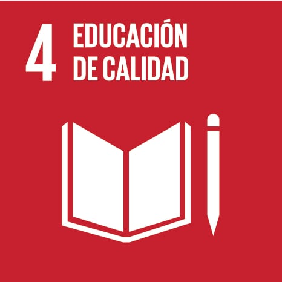

El objetivo tiene 10 metas y su plazo es 2030. Una de ellas busca que todas las niñas y niños completen la educación primaria y secundaria gratuita y de calidad.
Millones de niños y niñas siguen sin acceso a la educación, y las desigualdades son mayores en las zonas rurales y en los contextos económicos desfavorecidos.
Otras metas piden más becas, más docentes cualificados y mejores escuelas en los países en desarrollo.